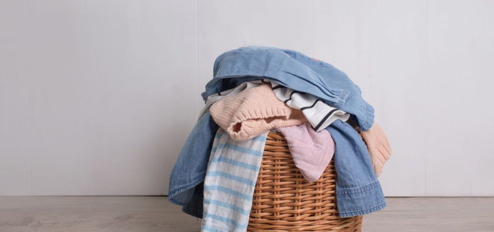
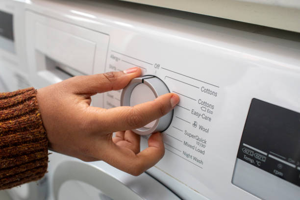
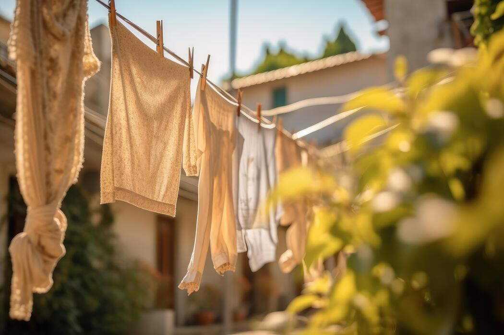
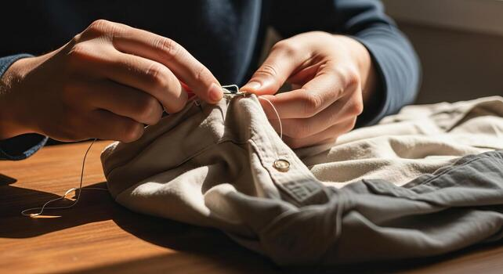

Caring for clothes is a regular household responsibility, but it can also help protect the environment. Maintaining garments properly reduces their environmental impact and prevents textiles from ending up in landfills.
Creating a sustainable wardrobe often begins with simple daily habits instead of buying new clothes. Making small changes to the way we wash and care for our garments can suppor t a healthier planet. Here are five practical habits to try.
Not all clothing needs to be washed after every wear. Washing clothes less often reduces fabric damage, saves water, and helps conserve resources.

Washing machines consume energy to heat water, so using cold-water settings is an easy way to reduce household electricity use and lower your carbon footprint. Cold water is also gentler on fabrics, helping preser ve colors and reduce shrinkage.
Use a drying rack or hang clothes outdoors when possible. Air-drying requires no electricity and is gentler on delicate fabrics.

Replacing a button or mending a small hole can extend a garment’s lifespan and reduce the need for new clothing production.

When clothing becomes too worn to wear, its fabric can often be reused in other ways. For example, old cotton T-shir ts can be cut into sturdy cleaning cloths for dusting or wiping sur faces. Repurposing textiles provides a reusable alternative to paper towels and helps prevent valuable materials from becoming waste.
If Earth Month has inspired you but also left you feeling over whelmed, you are not alone. Star t with small, manageable actions that benefit the planet. Even simple, mindful changes to your daily routines can make a difference.
With garment care in mind, here are a few easy steps you can take at home to reduce the amount of textile waste to landfills.
If a garment is labeled “Hand Wash Only,” consider whether you can consistently wash it by hand. If the process becomes too inconvenient, you may eventually stop wearing it and donate it. To avoid this, buy clothing that matches the level of care you can realistically provide.
Stains can happen to anyone, but once they become permanent, you may be less likely to wear the garment — especially if the stain is noticeable. Use a stain stick or spray to treat stains as soon as possible. Acting quickly improves the chances of removing them successfully.
If a garment is genuinely dirty, wash it. However, if it can be worn again, freshen it with a steamer or by airing it out. When washing lightly soiled clothes, use cold water and a low-heat drying setting. These options are gentler on fabrics and use less energy. For an even more sustainable choice, line-dry your clothes.
Don ’t throw away clothes, pillowcases, or other textiles just because they have pilling— small fuzz balls caused by wear and friction. Remove the pills to refresh the fabric’s surface, mend any holes, and replace missing buttons. With these simple repairs, your items can look almost new again.
Your clothes, bedding, and home decor do not need to be expensive, but they should be useful, suit your lifestyle, and make you feel comfortable. Choose items thoughtfully and care for them properly so you can enjoy them for many years.